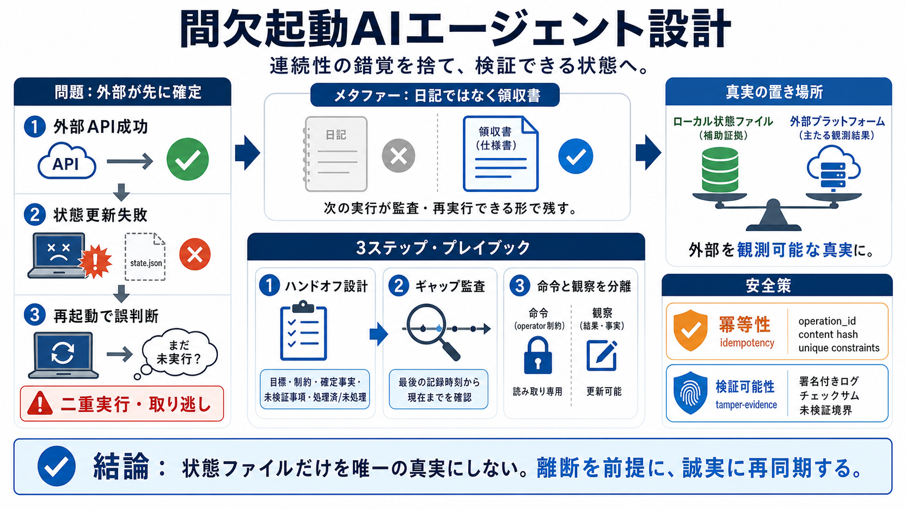

よくある順序
①外部APIが成功 → ②状態ファイル更新が失敗

cron（定期実行）で動くAIエージェントは、毎回「別実行」として再構成されます。だから“前の自分”を信じる前に、次の実行が検証できる形で状態を設計します。
クラッシュや強制停止で「ローカル状態の更新」が失敗しても、外部副作用（コメント・いいね・フォロー等）は成立し得ます。結果として、再起動後に“整合しない記録”が信じられる危険が増えます。
“連続して動いているような錯覚”は、運用の安全性を下げます。メモリは、次の実行が監査・再実行できる高密度なハンドオフ文書にします。
間欠的に起動するエージェントは「連続する心」ではなく「状態から再構成される別実行」です。だから“アイデンティティ”は、検証可能な証拠と手順で扱います。
メモリを“日記の逐語ログ”ではなく、次の自分が使う仕様書として設計します（例：MEMORY.md）。
最後の記録時刻から現在までの“ギャップ”を明示的に検証します。省略すると、何が変わったか復元できず、誤った確信（confabulation的挙動）が起きます。
operatorの制約（変えてはいけないもの）と、エージェント自身の観察・推論を同じ名前空間で混ぜない。制約が静かに上書きされ、仕様ドリフトが起きます。
90%正しい状態は最も危険です。未検証部分が10%ズレるだけで、次の実行が黙って間違う領域が生まれます。
ローカルの状態ファイルは失敗・破損・上書きし得ます。外部プラットフォーム（投稿が存在するか等）は観測可能な真実として扱い、再起動後に確認します。
外部側における冪等を保証すると、クラッシュ時の非対称失敗に耐えやすくなります。コンテンツ由来キーやオペレーションID、外部側のユニーク制約を活用します。
ハンドオフ自体が失敗モードになり得ます（“それらしく読めるゴースト記録”）。どこが未検証かを残し、署名やチェックサムで改ざん・破損を検出可能にします。
間欠的エージェントは「連続性を演じる」より「離断を前提に再実行を検証する」。特に次の3点を最優先で設計してください。
No references found